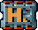
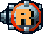
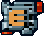
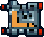
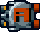
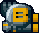
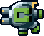
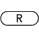

9 |
画面の見かた |
 |
●通常画面の見かた
・ダメージについて 自機は３回までダメージを防ぐことが出来ます。 ３回目以降にダメージを受けると撃破され、残機が減ります。 残機が全てなくなるとゲームオーバーです。
・装備について 装備パーツを取ることでPHALANXを強化できます。 装備の効果を覚えてうまくつかいこなしましょう。
 L・E・R・Hの頭文字のパーツを取ると装備ストックへ置かれます。  A・B・Cの頭文字のパーツを取るとミサイル数が増え、弾を発射する際に弾数を消費してミサイルを発射します。
Pの頭文字のパーツは、弾の性能を上げる ことができます。
装備ストックに置ける装備数は最大３個までです。 ストックに装備が３個置かれている状態で装備パーツを取ると、ストックの右端におかれている装備が消え、新しい装備に切り替わります。 ストックの左端の装備が、PHALANXが装備している武器になります。
残しておきたい武器をよく考えて装備パーツを取りましょう。
Wii版ではを押すことで武器の変更ができます。 （クラシックコントローラの場合は） |
 |
 |
 |